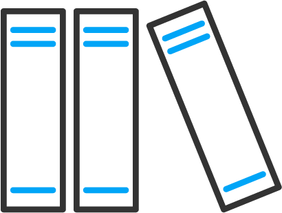

Карти та маршрути
Послуги ЦНАПу
Відкрите місто
Електронна демократія
Звернення та запити
Відкриті дані
Охорона здоров'я
Навчальні заклади

Цифрова бібліотека
Міський маркетплейс
Вебкамери по місту
Ще сервіси >